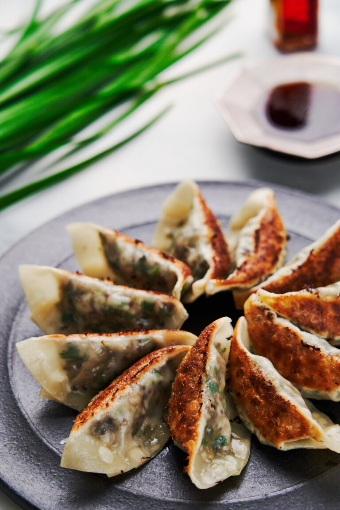

Gyoza

Description
Pleated, pan-fried dumplings, Chinese in origin (jiaozi), globally-popularized by their presence in Japanese cuisine. This variety is specifically meat-free.
Though difficult to fold, these dumplings are crispy, juicy, and difficult to pass up.
Ingredients
Gyoza Filling
- 150 grams fresh shiitake mushrooms--6 large ones, cleaned and minced
- 1 tablespoon vegetable oil--plus more for frying the gyoza
- 90 grams quinoa--1/2 cup, washed
- 200 grams cabbage--5 large leaves, minced
- 1 cup water
- 1 tablespoon sake
- 1/2 teaspoon salt
- 8 grams dried shiitake mushrooms--2 small mushrooms
- 2 grams konbu--1-inch x 1-inch piece
- 100 grams garlic chives--1 bunch
- 20 grams fresh ginger--1-inch knob
- 1 tablespoons soy sauce
- 1 tablespoon toasted sesame oil
- 1 tablespoon potato starch
- 1/4 teaspoon white pepper
- 40 gyoza wrappers--can be found as 'potsticker wrappers' at some grocery stores.
- vegetable oil--(for frying)
Gyoza Sauce
- 2 tablespoons soy sauce
- 2 tablespoons rice vinegar
- chili oil optional
Steps:
- Sautee the chopped shiitake mushrooms in 1 tablespoon of vegetable oil until they're about 1/3 of their original volume, and just starting to brown.
- Add the quinoa, cabbage, water, sake, and salt. Give it a stir and cover it with a lid. Turn down the heat to low and let this mixture simmer for 15 minutes. If there's still water remaining at the bottom of the pan afterward, remove the lid and turn up the heat to evaporate the excess liquid.
- Prepare the garlic chives, and ginger while you wait for the quinoa to cook.
- Trim the shiitake stems' ends and then break the mushrooms up into smaller pieces as you add them to a clean spice grinder with the konbu. Blitz these into a fine powder. You can also use a blender or grater to make this umami powder.
- When the quinoa is done, transfer it to the bowl with the garlic chives and ginger and let it cool enough to handle.
- Add the soy sauce, toasted sesame oil, potato starch, and white pepper along with the umami powder and use your hand to knead the mixture together until everything is well distributed, and the mixture is sticky.
- To fold this Vegetable Gyoza, prepare a parchment-lined tray, a bowl of water, and a clean dish towel.
- Place a wrapper in the palm of your non-dominant hand and wet the entire rim of the wrapper with water.
- Add about a tablespoon of filling to the center of the wrapper and fold the wrapper over the filling without sealing it shut.
- Use the thumb and index finger of your dominant hand to add 3-4 pleats to the top half of the wrapper as you seal it shut. Be careful not to seal any air into the dumpling. Keep the folded gyoza covered with a clean dish towel to prevent them from drying out.
- When you're ready to fry the dumplings, put a non-stick frying pan over high heat and add a generous tablespoon of oil. Start lining up the gyoza in a circle around the pan, but don't squeeze them in too tight, or they will stick together.
- With a lid in one hand, add 1/4 cup of water into the pan with the other and cover it immediately. Adjust the heat down to prevent the water from evaporating too quickly and set the timer for three minutes.
- Remove the lid and allow any remaining water to evaporate. If the pan doesn't have much oil remaining, add a little extra oil and pan-fry the potstickers until they're golden brown and crisp on the bottom.
- Serve these Vegetable Gyoza with a dipping sauce made from rice vinegar, soy sauce, and chili oil.
Return to index